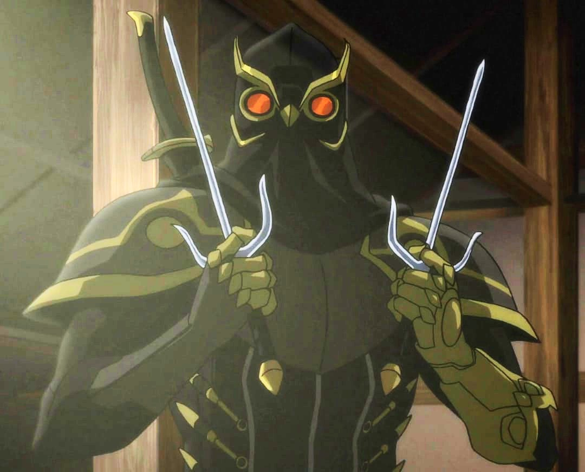
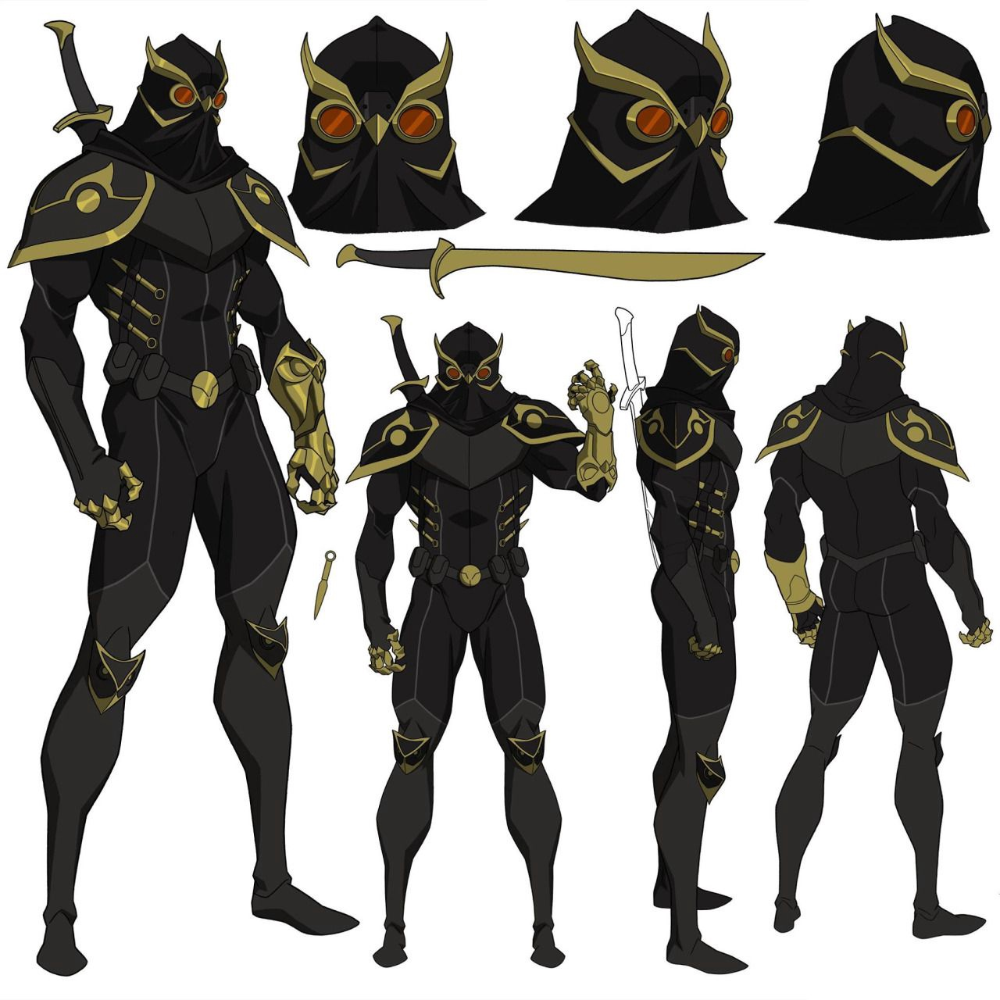

"Trust your instincts."
Talon

Biography
Talon was the latest in a long line of master assassins hired by the mysterious Court of Owls. In his youth, Talon was recruited by a member of the Vanaver family of the Court of Owls. He was raised and trained by Vanaver to become a skilled assassin. It was then that the lonely boy received the power with a purpose: to become the Claw of the Court of Owls. Years later, Talon arrived in Gotham hoping to recruit Damian Wayne as his successor.
Strength
- Low-meta human enhanced strength
- Can overpower armed opponents and break doors
- High melee lethality with claws
Speed & Reflexes
- Bullet-dodging reaction timing
- Can evade sustained gunfire at close range
- Elite assassin-level agility
Accuracy
- Peak human precision
- Instant lethal strikes to vital points
Endurance
- Peak human durability
- Can continue fighting after sustained melee damage
Skills
- Master assassin training
- Elite stealth and infiltration
- Superior close combat skills
- Can rival Batman-level fighters in combat efficiency
Experience
Veteran operative of the Court of Owls, executing high-level assassination missions.

Equipment
- Infrared vision goggles
- Bladed gauntlets
- Retractable arm blades
- Boot spikes
- Scimitar-style sword
- Kunai blades